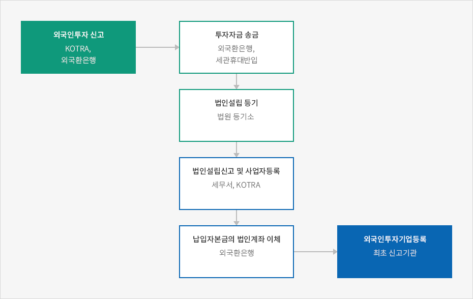

외국인직접투자절차
- Home
- 투자가이드
- 외국인직접투자절차
외국인직접투자제도
외국인직접투자란 투자금액이 1억 원 이상으로서 외국인투자비율이 10% 이상일 경우를 말하며, 외국인은 특별한 규정이 있는 경우를 제외하고는 국내에서 제한을 받지 않고 사업을 영위할 수 있다.
투자의 유형으로 국내기업의 주식을 취득하는 경우와 해외모기업 등으로부터 5년 이상의 장기차관을 받는 경우 및 과학기술분야의 비영리법인에 투자하는 경우가 있다. 또한 외국인투자기업이 미처분
이익잉여금을 그 기업의 공장 신 · 증설 등에 사용하는 경우도 외국인투자로 본다. 외국투자가가 주식 등을 취득하기 위한 출자목적물로는 외국통화, 자본재, 취득한 주식 등에서 생긴 과실, 산업재산권 등이 인정된다.
외국인 투자 절차
외국인 투자 절차는 크게 외국인 투자 신고, 투자자금 송금, 법인설립 등기 및 사업자 등록, 외국인 투자기업 등록의 4단계로 이루어집니다. 내국법인의 법인설립 절차와 비교할 때, 외국인은 ‘외국인 투자 신고’와 ‘외국인 투자 기업 등록’의 2개 단계만 추가될 뿐 나머지는 기본적으로 동일합니다. 단, 개인사업자로 등록하는 경우, ‘법인설립등기’절차가 필요하지 않습니다.


- 외국인투자 신고 : KOTRA,외국환은행
- 투자자금 송금 : 외국환은행, 세관휴대반입
- 법인설립 등기 : 법원등기소
- 법인설립신고 및 사업자등록 : 세무서, KOTRA
- 납입자본금의 법인계좌 이체 : 외국환은행
- 외국인투자기업등록 : 최초 신고기관

외국인의 국내 진출 방법
외국인이 사업을 목적으로 국내에 진출하는 방법은 외국인(개인 또는 법인)이 현지법인을 설립하여 국내에 진출하는 벙법과 외국법인이 국내에 지점이나 연락사무소를 설치하는 방법으로 구분됩니다.(※법인 설립 절차는 상기 외국인 투자 절차를 참고하세요.)